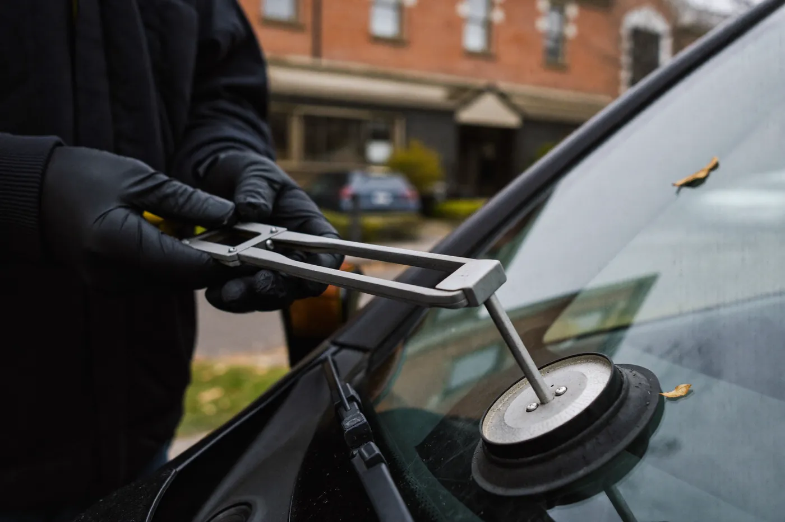

Windshield chip repair in Paterson stops rock chips and short cracks before they spread across the glass. We fill the break with clear resin at your house or job, and most repairs take well under an hour.
(973) 938-8879
The tech cleans the chip, sets a small injector bridge over it and pulls the air out of the break. Clear resin is pushed in under pressure until it fills every leg of the chip.
A UV light cures the resin hard, then the surface gets scraped flush and polished. The chip won’t vanish completely, but it usually fades a lot and, more to the point, stops growing.
Callers ask, “How long can I wait?” Not long, especially in winter. A chip that sits for months fills with dirt and moisture the resin can’t fully push out.
A chip is a weak point, and Paterson winters keep leaning on it. Water gets into the break, freezes overnight and pries the edges apart a little more each time.
Defrosting cold glass, slamming a door and hitting potholes on the way down Market Street all add stress. A chip left alone from December to March has a good chance of becoming a full crack.
The number of chips matters most, since extra chips on the same windshield are usually priced on their own. Size and location matter too; a chip right in front of the driver may not be a good repair candidate at all.
Insurance is the big one. Many insurers cover chip repair with no deductible, because a repair costs them less than a new windshield. Call (973) 938-8879 for a free quote on windshield chip repair in Paterson.
| Chip repair | Windshield replacement |
|---|---|
| Chips smaller than a quarter and short single cracks. | Long cracks, cracks at the edge and damage in the driver’s view. |
| Keeps the original glass and factory seal. | New glass and a fresh urethane seal. |
| Usually no camera calibration needed. | Calibration often needed on late-model cars. |
If the damage is too big to fill, read about windshield replacement in Paterson.
Most windshield chip repairs in Paterson take about 30 minutes, and you can drive right after. Each extra chip on the same windshield adds a few minutes.
A repaired chip usually fades a lot but rarely disappears completely. The point of windshield chip repair is to stop the break from spreading and keep the glass strong. Chips fixed early tend to look the best.
Many New Jersey insurers pay for windshield chip repair under comprehensive coverage and waive the deductible, since it costs less than a new windshield. Policies differ, so check yours or ask us when you call.
No. Chips larger than a quarter, cracks longer than a dollar bill, damage at the edge of the glass and breaks in the driver’s direct view usually need a new windshield. We’ll tell you which fits after seeing the damage.
Call now for a free quote. We come to your home or job in Paterson.
Call (973) 938-8879 for a Free Quote